그때그놀이-073 · 2026-11-25 · 시험판(/nori/lab/)에만 반영 · 손님 화면은 그대로
1. 함께하는 곳 — 사랑흐름 먼저
첫 화면 맨 아래. 원본(016)에서 가져온 뒤 순서만 바꿨어요. 공용 파일은 건드리지 않았어요.
전
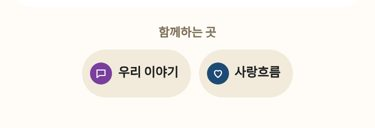
후
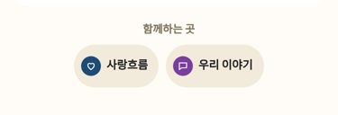
2. 한 화면 점검 — 놀이 23가지
크기 셋에서 「시작 전 창 · 놀이판 · 결과 카드」를 모두 돌려 봤어요.
375×553 은 아이폰 SE 에서 사파리 주소창이 보일 때 실제로 남는 화면이에요. 손님 폰에서 넘치던 것은 이 크기였어요.
크기
시작 전 창
놀이판
결과 카드
360×640
전 0 → 후 0
전 0 → 후 0
전 23 → 후 0
375×667
전 0 → 후 0
전 0 → 후 0
전 23 → 후 0
375×553
전 20 → 후 0
전 2 → 후 0
전 23 → 후 0
후: 23가지 × 세 크기 × 세 단계 모두 한 화면 (넘치는 놀이 0)
넘치던 것
· 시작 전 창: 「시작!」 단추가 화면 밖 (20가지). 작은 화면용 줄임 규칙이 있었는데 뒤 규칙에 덮여 안 먹고 있었어요.
· 놀이판: 원판 다트 · 투호 — 판을 220칸 아래로는 못 줄이게 막혀 있어 「던지기」가 아래 막대 밑으로 숨었어요.
· 결과 카드: 모든 놀이에서 맨 아래 「이야기방에 올리기 · 사랑흐름 둘러보기」가 화면 밖, 작은 폰에서는 「선물 받기」까지 숨었어요.
고친 것 (장식 더하지 않음 · v0.2 틀 그대로)
· 시작 전 창: 작은 화면에서 그때 이야기 글 · 고르는 칸을 한 줄로 줄이고, 「시작!」은 늘 창 바닥에 붙음.
· 놀이판: 넘칠 때 판을 더 줄일 수 있게(다트 · 투호 · 딱지 · 구슬 공통).
· 결과 카드: 사진 칸 · 글자 사이를 줄이고 「선물 받기 · 결과 사진 저장 · 공유하기」를 한 줄로. · 사랑흐름-놀이-006 (대표 확정 16:17): 「카드 저장」 → 「결과 사진 저장」 · 손님이 보는 「카드」 말도 「결과 사진」으로.
시작 전 창 · 가위바위보 (375×553)
전 — 「시작!」 안 보임
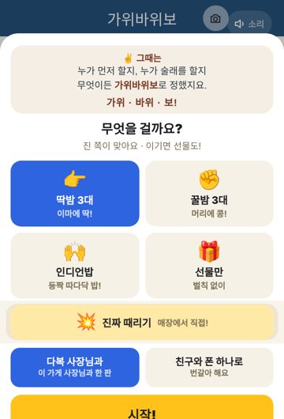
후
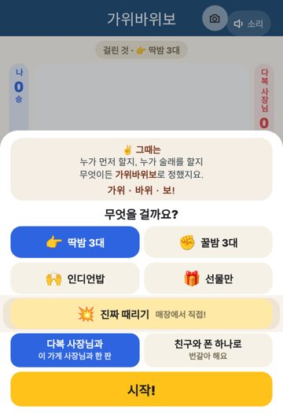
시작 전 창 · 번데기 돌림판 (375×553)
전
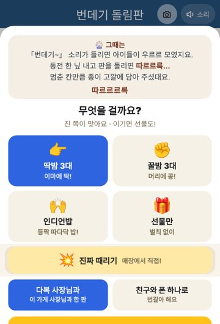
후
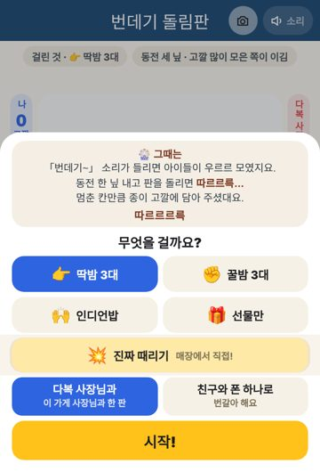
놀이판 · 원판 다트 (375×553)
전 — 「던지기」 숨음
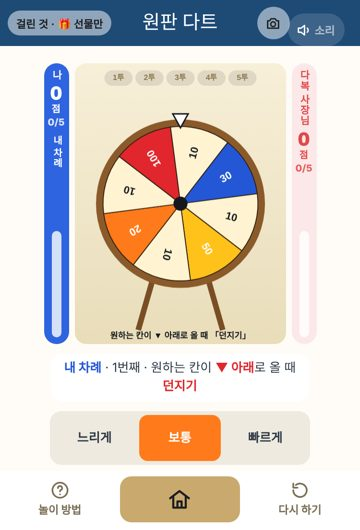
후
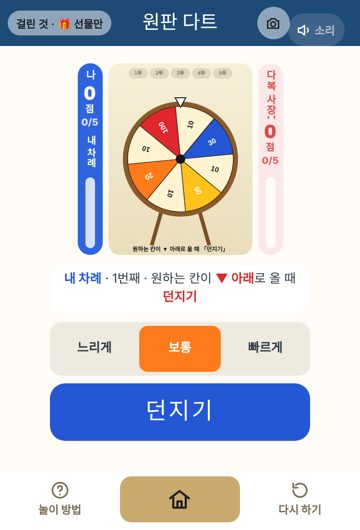
놀이판 · 투호 (375×553)
전
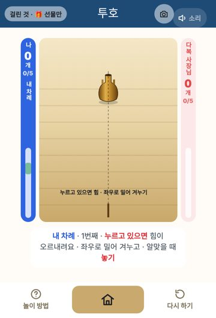
후
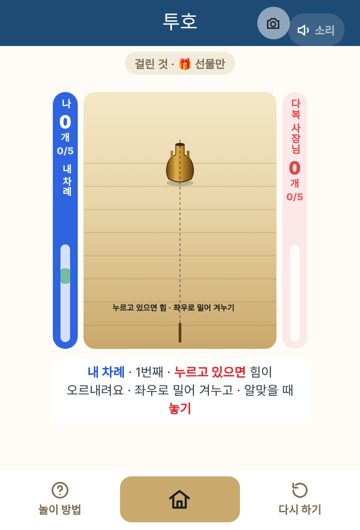
결과 카드 · 가위바위보 한 판 끝까지 (375×553)
전 — 「선물 받기」 숨음
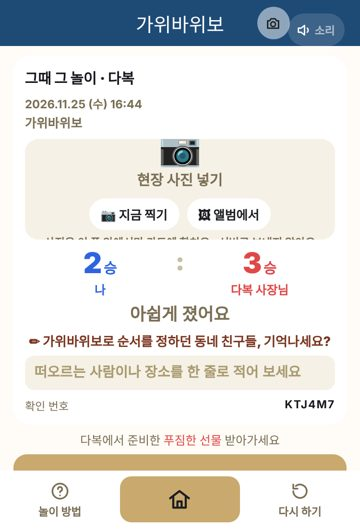
후
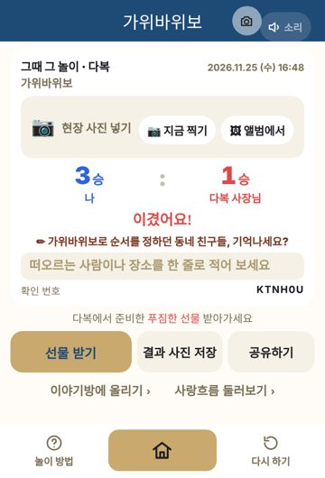
함께 보실 것 (071) — 운동회 달리기 · 그때 이야기 바꿈은 시험판에 이미 있어요.
· 시험판: www.loveflow.ai.kr/nori/lab/ · 그때 이야기 전후: www.loveflow.ai.kr/nori/lab/story/v2/
승인 주시면 이번 것과 함께 손님 화면 v3.5 로 올려요.